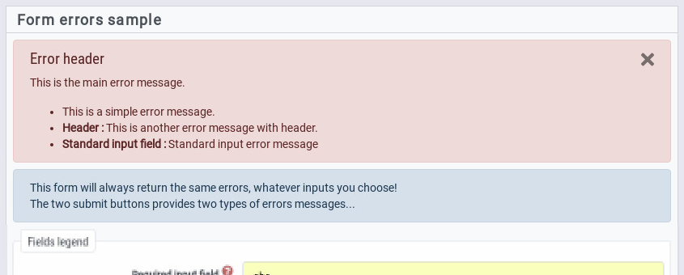
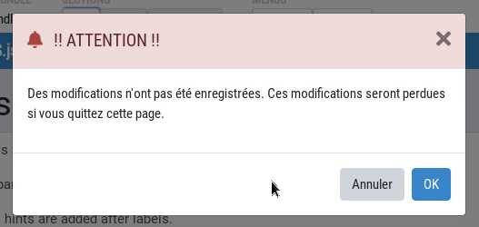
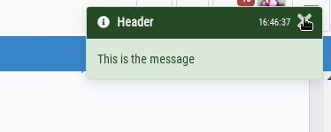
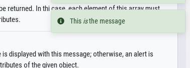

The alert module is used to display several kinds of messages.
MyAMS.alert.alert(props)This function is used to display an alert message; an alert is included into HTML content (typically at the top of a form) and is not dismissed automatically.

props is an object which can have the following attributes; none of them is
mandatory:
status: alert status is matching Bootstrap contexts (primary,
secondary, info...). The error context can also
be used, and it is matching danger context. Default value is
info.
parent: this is the jQuery object matching the parent into which the
alert must be added; this element is always cleared from previous alerts of the same
status, except those for which a persistent class has been added, then
the alert is displayed at the start of the element.
header: this is the alert header.
message: message content; this can be a simple string, or an array of
strings; in case of an array, messages are displayed as list items.
MyAMS.alert.bigBox(props): Promise<string>A big box is a modal dialog used to display a message. Compared with other messages,
this one provides OK/Cancel buttons which allows to validate a question; so the function
returns a Promise which is resolved with the "dismiss value" of the button used to close
the modal, which can be success if the "OK" button was used, or
cancel in the other cases (Escape key, close button or Cancel button).

props is an object which have the following attributes:
status: message status is matching Bootstrap contexts, and is used to
set header color; default value is info.
icon: this is the FontAwesome icon to use; please note that only the
fa CSS class is automatically added, so custom icons like brands which
are not in the standard library have to be added as part of the icon name (for exemple,
as in fab fa-youtube).
title: modal title.
message: message content.
cancelLabel: label of the cancel button; if not provided, a default
label from MyAMS I18n module will be used.
successLabel: label of the submit button; if not provided, a default
label from MyAMS I18n module will be used.
MyAMS.alert.messageBox(props)This function is used to display a message box on the right of the screen, like this:

props is an object which can have the following attributes; none of them is
mandatory:
status: message status is matching Bootstrap contexts; default value is
info.
timeout: this is the number of milliseconds after which the toast is
automatically dismissed; default value is 5000. If the given value is 0,
the toast is never dismissed automatically (but a close button is always available).
title: message box title.
icon: this is the FontAwesome icon to use; please note that only the
fa CSS class is automatically added, so custom icons like brands which
are not in the standard library have to be added as part of the icon name (for exemple,
as in fab fa-youtube).
hideTimestamp: a timestamp, as in the example displayed above, is
automatically added to toast header; if this attribute is set to true,
this timestamp is not displayed.
content: if this attribute is used, it's content is used "as is" to
display given message.
message: this attribute will be used only if content is not
defined; if so, it's value is integrated in the toast into an HTML paragraph.
Message boxes are handled as stacked Bootstrap toasts; a toasts container is creadted automatically by MyAMS if required.
MyAMS.alert.smallBox(props)This function is used to display a small message box on the right of the screen, like this:

Compared with previous message box, this one doesn't have a title and is always dismissed automatically.
props is an object which have the following attributes:
status: message status is matching Bootstrap contexts; default value is
info.
timeout: this is the number of milliseconds after which the toast is
automatically dismissed; default value is 5000. This timeout can't be cancelled
with a 0 value.
content: if this attribute is used, it's content is used "as is" to
display given message. If defined, icon and message
attributes are not used.
icon: this is the FontAwesome icon to use; please note that only the
fa CSS class is automatically added, so custom icons like brands which
are not in the standard library have to be added as part of the icon name (for exemple,
as in fab fa-youtube).
message: this attribute will be used only if content is not
defined; if so, it's value is integrated in the toast into an HTML paragraph.
Message boxes are handled as stacked Bootstrap toasts; a toasts container is creadted automatically by MyAMS if required.